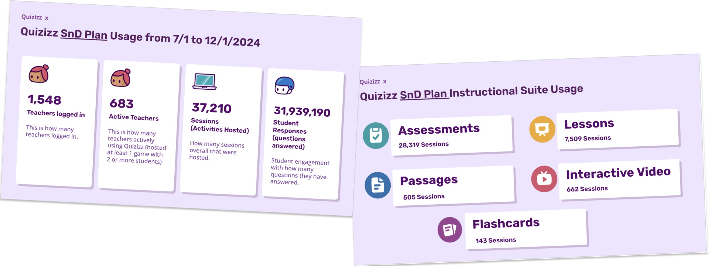
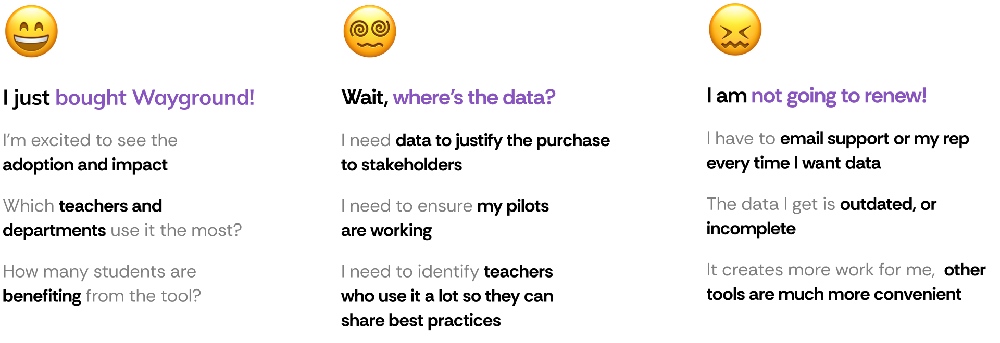
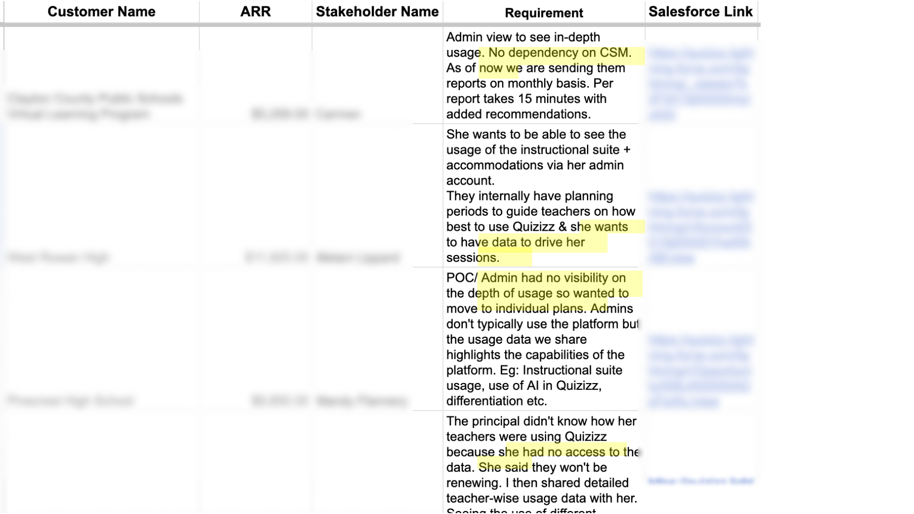
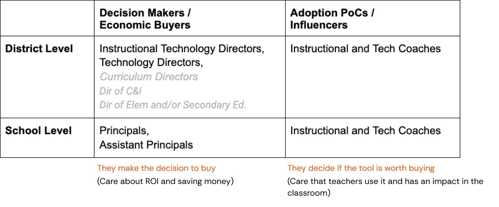
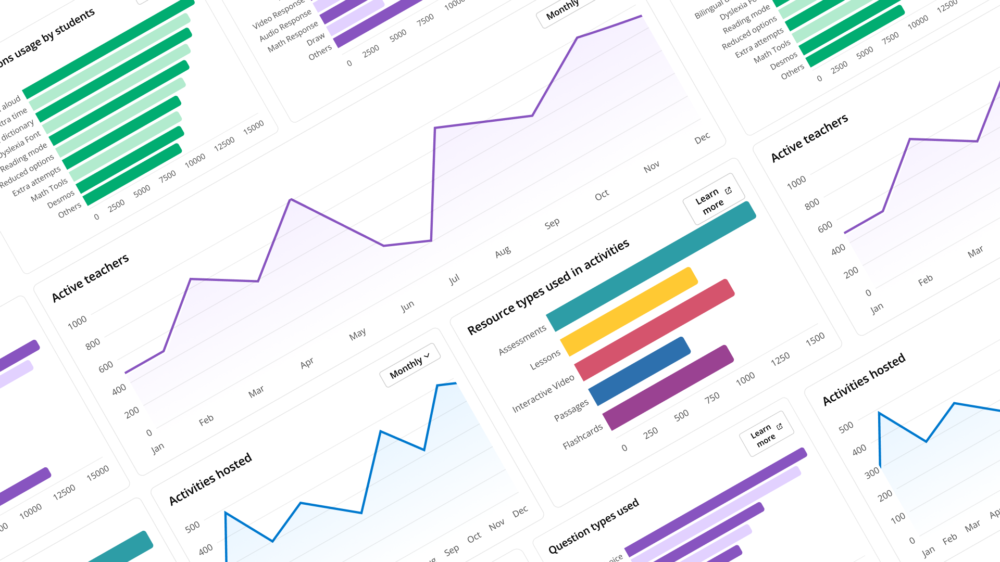
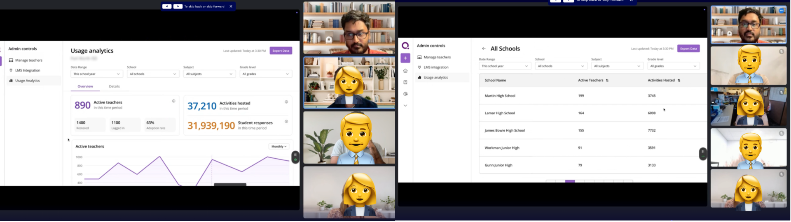
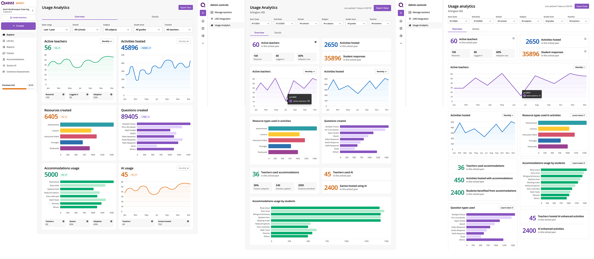
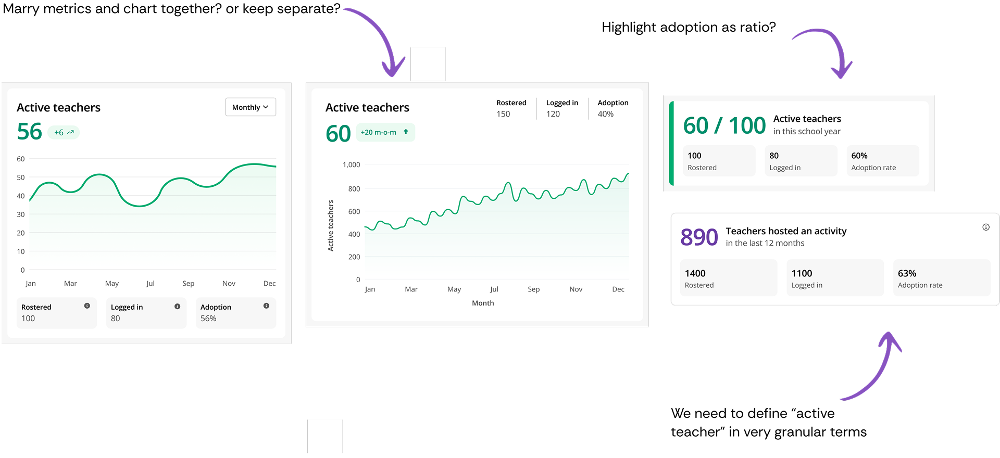
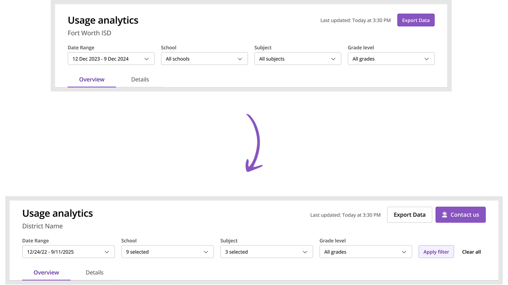

Usage analytics dashboard
Scaling customer success from manual reports to self-service dashboards
Overview
To unlock the next level of sales, Wayground had to transition from an individual teacher product to a robust enterprise solution for large schools and districts. This was one of two projects that defined that enterprise strategy - the companion being content moderation. Here, the scalability problem was different: our customer success team was drowning in manual reporting requests, and the fix was about enabling stakeholders rather than fighting them.
Led end-to-end process from user research to interactive prototyping. Unblocked engineering by creating code prototypes, designed reusable charting components as part of design system.

Problem statement
Wayground customer success team was burnt out. From 2022, we had pivoted from targeting individual teachers to selling as a package to schools and districts. Customer success team did a lot of tedious, manual work to pull and prepare reports and analytics of usage/adoption for the large school and district customers. These were sent via email.

This model was no longer scalable. Each CS rep had a few dozen schools and districts they were managing. Dealing with ad hoc requests meant they were overloaded and had a slow turnaround time.
Our largest customers were threatening not to renew. They were unhappy with the turnaround time to get the data and there were data pipeline/reliability issues meaning that they could get inconsistent data month on month.

Discovery & research
CS was overloaded and came to us. PM, CS and Designer (me) sat together to aggregate the feedback from different customer conversations and start discovery.

Personas from user calls

Key user scenarios
Renewal
"I see 40% of teachers at pilot school actively using Wayground in the trial period. Comparing against similar rollouts, this indicates good adoption. I approve renewing it for the entire school year."
Adoption
"I want to understand if using Wayground is having any impact or not. Hmm, teachers are using it, that is a good sign. Although not used by many departments, it's good that it's useful for Maths and English…"
Comparing tools
"I see Wayground has a video format like [competitor]. Although only 500 teachers use it while 2000 teachers use [competitor]. Maybe I can try to increase Wayground adoption and if it works well we can stop paying for [competitor]."
HMW & UX principles
Conducted a workshop with CS, Data Team and Product to scope out the most needed features, and reviewed competitors.
For admins
HMW create an analytics experience that doesn't just display data but actively helps administrators make better decisions about implementation, training, and renewal.
For CSMs
HMW help CSMs focus more on relationship building than data prep. Hit the streets, not the spreadsheets.
UX principles
- When choosing a metric/chart, does this help the admin make better decisions around Wayground adoption? If not, don't show it.
- Does showing this help the CSM make better decisions for their school or district? If not, don't show it.
- BLUF - Bottom Line Up Front where possible. Show summaries or key info to unblock users.
- There are a lot of charts and data points to show. Admins are busy people - ensure we don't overwhelm with too much cognitive load.
Information architecture
We asked admins to walk us through how they read and interpreted dashboards in other tools. We saw a trend of a natural cognitive progression that matches how administrators would likely process and analyze the data.
We had to support both quick glances and deep dives as necessary. We created a taxonomy of data points and mapped it to frequency and time spent:
Level 1 - key metrics — viewed frequently for a few mins at a time
How many teachers are hosting an activity? How many activities hosted?
Level 2 - trend metrics — viewed frequently for a few mins at a time
How many teachers hosted month on month? What resource types were used?
Level 3 - distribution analysis — viewed infrequently for several mins at a time
What kind of resource types and accommodations are used? What is the usage of AI features?
Level 4 - comparative analysis — viewed rarely for hours at a time
How are different schools doing? What are top performing teachers and schools?
Code prototyping to unblock engineering
Problem: Data team wasn't aligned on the data model. We made low fidelity sketches, but they still had a lot of questions on where each data point is coming from, what is the interactivity, time period etc. How are filtering and selection going to work? How do we deal with edge cases?
Solution: Before going into high fidelity, I went into Cursor and vibe coded a prototype with interactivity, imported some of our design system components and then sat with the data team and gave that as the source of truth so they were unblocked and could start creating the data model and pipelines.

Charting components for design system
Problem: We didn't have charting in our design system and front end didn't want to build it. They wanted to use a third party library (Streamlit) which couldn't be customized to our design language - this would be a bad user experience.
Solution: I went through the codebase and found other examples where charting was used inside our product. I spoke to other devs and designers to understand implementation constraints. We finally chose Chart.js which was an opensource, flexible library that was perfect for our use case.
I sat with front end and engineering manager to discuss and came to an agreement: design system where possible - do not create new colour, typography or spacing primitives for charting.

User testing
Challenge: Admin user persona was busy and unavailable to talk. We got face time with admins of some critical districts by co-ordinating with the CS Team.
We created a simple usability testing plan and questionnaire for each call. I also pulled the data for each district and created a custom mockup to make the test more realistic. We got some good feedback on usage behaviours and nuances that helped us change the final design.

Iteration and design details
The IA stayed constant across iterations — most important metrics on top — but the visual treatment kept getting quieter. I moved away from contrasting backgrounds and heavy card chrome toward stripping out visual clutter and overhead, and the card structure became more modular and bento-box-like, supporting multiple layouts.
The question I kept circling on the cards was whether to separate the key metrics from the chart or keep them together. Which reads better? It mattered because some metrics were confusing in their own right — the way they were presented, or even how they were defined, could mislead admins if I got the framing wrong.


Designing the page header around a data constraint
The page header design evolved based on technical constraints. I initially envisioned real-time filter updates, where changing a filter would immediately refresh the data. But our data infrastructure (using Cassandra) made that hard at scale - a single district could have dozens of schools, thousands of teachers, and over 100,000 students. Querying and aggregating that volume of data in real-time was computationally intensive. So we pivoted to an "Apply Filters" pattern where admins explicitly trigger the data update, which improved performance significantly.
I also added a prominent "Contact Us" CTA that emails the CS team with context about what the admin is currently viewing. Admins often need to take action based on what they see in the data, and this kept our CS team engaged with their accounts rather than being cut out by the self-service dashboard.

Final design
Simplified the UI and reduced number of colours and data points shown to maximise readability. Added Detail tab to support deep dive user behaviour.
Impact & reflection
The dashboard now features in every enterprise customer conversation and gets cited in revenue retention. CS reception was strong, and the customers it was shown to responded well.
Other designers in team started using Cursor after I demoed my workflow to the team.
What could have been better
More direct admin access earlier
We coordinated through CS to get face time with admins, which limited our testing frequency. If I had pushed harder to establish direct relationships with a few friendly admin contacts early on, we could have run more rapid iteration cycles. The dependency on CS gatekeeping slowed down our validation process.
Technical constraints discovered too late
The Cassandra performance limitations that forced us to pivot from real-time to "Apply Filters" came up during implementation. If I had done a technical feasibility spike with engineering earlier - even just a 30-minute whiteboarding session - we could have designed with those constraints from the start rather than backtracking on interaction patterns.
Metrics definition workshop needed
I noticed confusion around how certain metrics were defined (mentioned in the card design deep dive). In hindsight, we should have run a cross-functional workshop specifically on metric definitions and data quality before designing. We were designing the interface while the data team was still figuring out what some numbers actually meant - classic cart before the horse.
Key learnings
Code prototypes create shared understanding
The "vibe coded" prototype was more effective than static mockups at aligning the data team. When you're designing data-heavy experiences, interactive prototypes that show state changes and edge cases are worth the extra effort. It became the source of truth and unblocked multiple teams.
Design system constraints as guardrails
The agreement with engineering to "use design system primitives, don't create new ones" for charting actually made the design process faster. Constraints forced creative solutions within existing patterns rather than bikeshedding new color palettes. Sometimes limitations are gifts.
Information architecture hierarchy works
The four-level structure (key metrics → trends → distribution → comparison) mapped to actual usage patterns and cognitive load. When IA is grounded in real user mental models rather than feature lists, it tends to hold up better through iteration.
Fighting for CS needs alongside user needs
The "Contact Us" CTA that emails CS with context wasn't just about users - it kept CS engaged and in the loop. In B2B products, your internal teams are stakeholders too. The dashboard succeeded partly because it made CS's lives better, not just admins'.